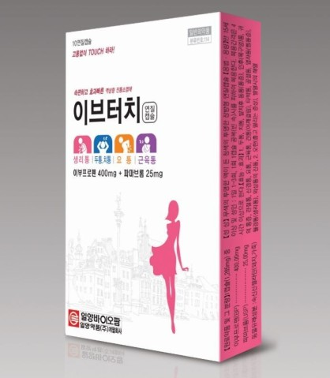
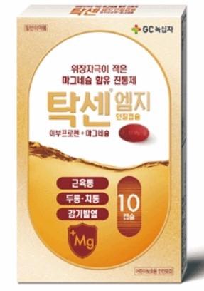
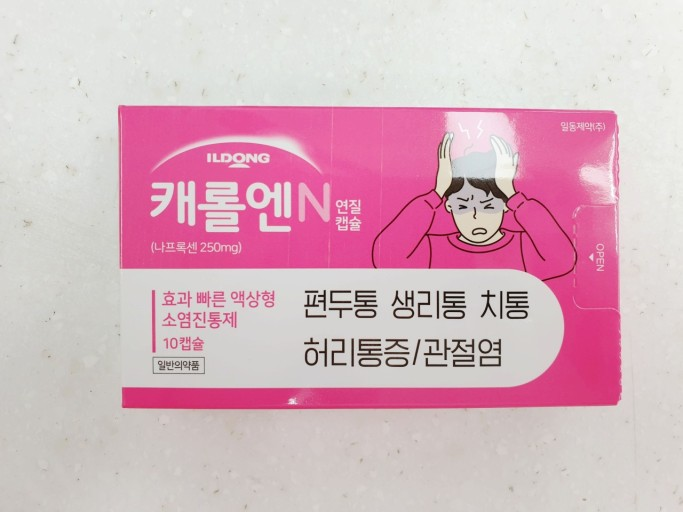
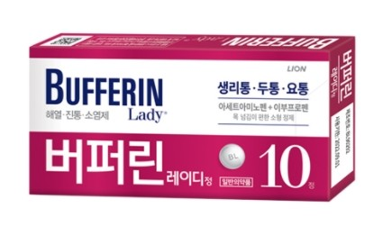
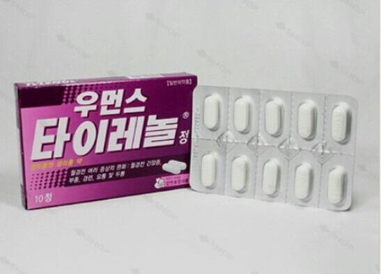
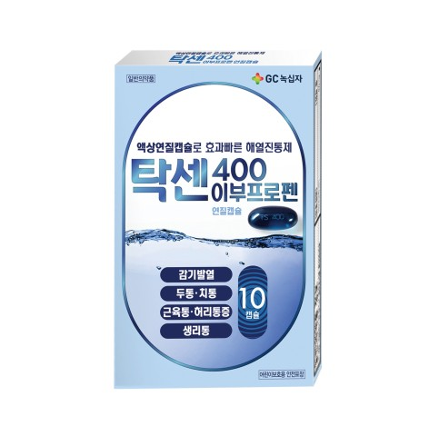
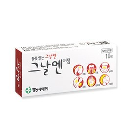

| 약 이미지 | 약 이름 | 약 성분 | 약 주요 효능,효과 | 약 가격 |
|---|---|---|---|---|
|  | 이브터치연질캡슐 | 이부프로펜, 파마브롬 | - 주로 생리통이 있을 때 사용한다. - 두통, 치통, 발치 후 동통(통증), 인후(목구멍)통, 귀의 통증, 관절통, 신경통, 요통, 근육통, 견통(어깨결림), 타박통, 골절통, 염좌통(삠통증), 월경통(생리통), 외상통의 진통 - 오한(춥고 떨리는 증상), 발열시의 해열 |
3,000원 |
|  | 탁센엠지연질캡슐 | 이부프로펜, 메타규산알루민산마그네슘 | - 생리통이 있을 때 사용한다. - 두통, 치통, 발치후 동통(통증), 인후(목구멍)통, 귀의 통증, 관절통, 신경통, 요통, 근육통, 견통(어깨결림), 타박통, 골절통, 염좌통(삠통증), 월경통(생리통), 외상통의 진통 - 오한, 발열시의 해열(춥고 떨리는 증상) -만 15세 이상 및 성인: 1일 1~3회, 1회 1~2캡슐 4시간 이상 간격 - 만 11세 이상 ~ 만15세 미만: 1일 1~3회, 1회 1캡슐 4시간 이상 간격 - 만 8세 이상 ~ 만 11세 미만: 1일 1~2회, 1회 1캡슐 6시간 이상 간격 - 공복(빈 속)시를 피하여 복용한다. |
3,500원 |
|  | 캐롤엔연질캡슐 | 나프록센 | - 류마티양 관절염, 골관절염(퇴행성 관절질환), 강직성 척추염, 건염, 급성 통풍, 월경곤란증 - 활액낭염, 골격근장애(염좌, 좌상, 외상, 요천통), 수술 후 동통, 편두통, 발치후 동통에 사용한다. - 연령, 증상에 따라 적절히 증감한다. - 소화성궤양 환자, 심한 혈액이상 환자, 심한 간장애 환자, 심한 심기능부전 환자, 심한 신장애[신장장애] 환자, 심한 고혈압 환자에는 투여하면 안된다. |
3,000원 |
|  | 버퍼린레이디정 | 아세트아미노펜, 알릴이소프로필아세틸요소, 이부프로펜,카페인무수물 | - 두통ㆍ치통ㆍ이를 뽑은 후의 통증(치통)ㆍ목구멍 통증(인후통)ㆍ귀통증ㆍ관절통ㆍ신경통ㆍ허리통증(요통)ㆍ근육통ㆍ어깨결림(견통)ㆍ타박통ㆍ골절통ㆍ삔통증(염좌통)ㆍ월경통(생리통)ㆍ외상통의 진통, 추위(오한)ㆍ발열 시 해열에 사용한다. - 성인(15세 이상) - 1회 2정을 1일 3회 복용한다. - 공복을 피하여 복용하며, 복용간격은 4시간 이상이 되도록 한다. - 단, 15세 미만 어린이는 복용하지 않는다. |
3,000원 |
|  | 우먼스타이레놀정 | 아세트아미노펜, 파마브롬 | - 월경전 여러 증상의 완화 : 월경 전 긴장증, 부종(부기), 경련, 요통 및 두통에 사용한다. - 성인 및 12세 이상의 소아는 1회 1 ～ 2정을 필요시 6시간 간격으로 복용한다. 1일 총 용량은 6정을 초과하지 않는다. - 12세 미만의 소아는 이 약을 복용해서는 안된다. |
3,000원 |
|  | 탁센400이부프로펜연질캡슐 | 이부프로펜 | - 감기로 인한 발열 및 동통(통증), 요(허리)통, 생리통, 류마티양 관절염, 연소성(어리거나 젊은나이에 나타나는) 류마티양 관절염, 골관절염(퇴행성 관절질환), 수술후 동통(통증)에 사용 - 두통, 편두통, 치통, 근육통, 신경통, 강직성 척추염, 급성통풍, 건선(마른비늘증)성 관절염, 연조직손상(염좌(삠), 좌상(타박상)), 비관절 류마티스질환(건염(힘줄염), 건초염(힘줄윤활막염), 활액(윤활)낭염) |
3,000원 |
|  | 그날엔정 | 알릴이소프로필아세틸요소, 이부프로펜, 카페인무수물 | - - 두통, 치통, 발치(이를 뽑음)후 동통(통증), 인후(목구멍)통, 귀의 통증, 관절통, 신경통, 요(허리)통, 근육통, 견통(어깨통증), 타박통, 골절통, 염좌통(삔 통증), 생리통, 외상(상처)통의 진통,오한, 발열시의 해열에 사용한다. - 15세 이상 1회 2정 1일 3회 복용한다. - 공복(빈 속)을 피하여 복용하며 복용간격은 4시간 이상이 되도록 한다. |
2,500원 |